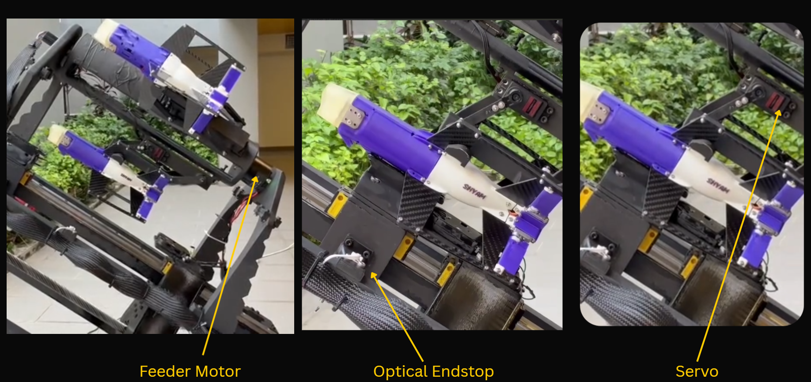
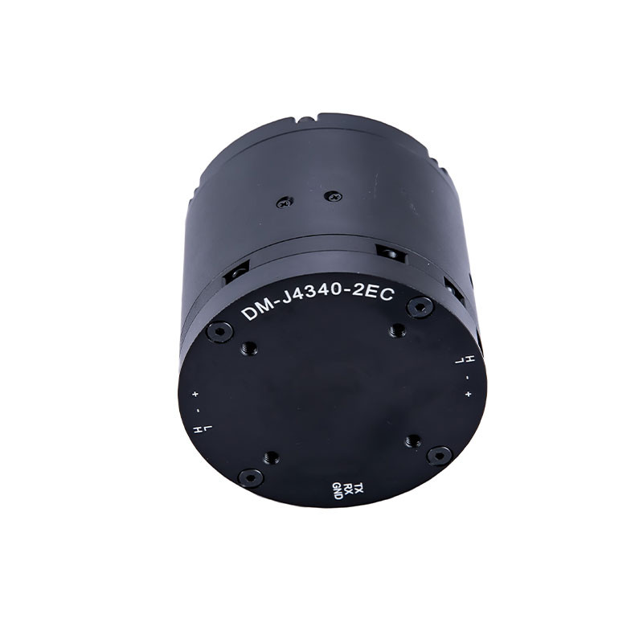
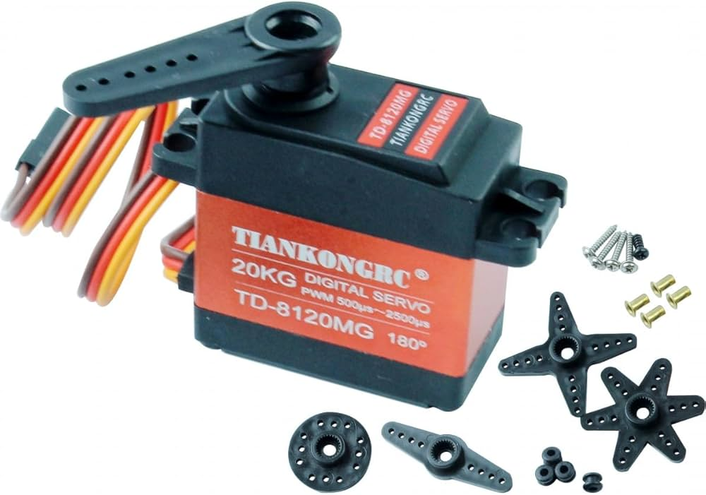
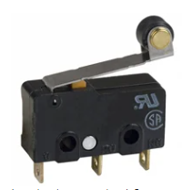
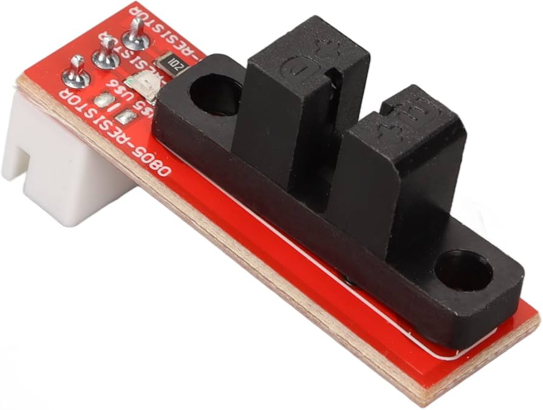

Indexing accuracy
The feed motor must stop at well-defined angular positions so the physical magazine aligns with the launcher loading bay after each cycle.
The feeder electronics coordinate magazine indexing, dart transfer, and launcher handoff through sensor-gated state transitions. The design emphasizes repeatability, safe sequencing, and bench-tunable parameters for rapid iteration.
Y4 EE
The comprehensive V-shaped system methodology used for this subsystem is detailed in the Yaw Electronics section.
Following the Feeder Mechanical Design, the electronics requirements are as follows:
The feed motor must stop at well-defined angular positions so the physical magazine aligns with the launcher loading bay after each cycle.
The selected motors are sized to hold the dart and provide the required 2 N·m torque specified by the mechanical design.
The feeder may only advance the dart when the launcher carriage is in a known pose—signalled when drawing the band trips a datum sensor—so hooks and dart features do not collide.
Distances, servo angles, and feeder motor angles must be adjustable without reflashing full mission code, because mechanical stack-up varies across builds.
The first shot differs from follow-on shots (initial ready gating); firmware must encode that distinction explicitly.
The magazine uses a Damiao integrated indexer and TIANKONGRC digital servos for dart transfer; each major electromechanical part includes a photo reference and a transcribed datasheet summary. Remaining interface hardware is summarized in the cards at the end of this section.

Feeder Motor
Damiao DM4340 Integrated brushless servo actuator (motor + driver + dual encoders)
Drives the feeder magazine to the next cell and holds intermediate positions during the load sequence. Control uses onboard CAN at 1 Mbps; factory tuning uses UART at 921600 baud. Dual 14-bit magnetic encoders on the module provide shaft-referenced feedback for indexing without a separate encoder assembly.

| Parameter | Value |
|---|---|
| Electrical — motor | |
| Rated voltage | 24 V DC |
| Rated / peak current | 2.5 A / 8 A |
| Rated / peak torque | 9 N·m / 27 N·m |
| Rated speed | 36 rpm |
| No-load speed (max) | 52 rpm |
| Mechanism | |
| Reduction ratio | 40 : 1 |
| Pole pairs (per datasheet) | 14 |
| Phase L / R | 360 µH / 880 mΩ |
| Mechanical | |
| Outer Ø × height | 57 mm × 56.5 mm |
| Mass | ≈ 375 g |
| Encoder (onboard) | |
| Resolution / count | 14-bit · 2× magnetic (single-turn) |
| Interfaces | |
| Control bus | CAN @ 1 Mbps |
| Configuration / tuning | UART @ 921600 bps |
Dart transfer servos
TIANKONGRC TD-8120MG Digital high-torque servo · 20 kg·cm class · PWM control
These servos clamp and release the dart during the feeder–launcher handoff. Stall torque reaches 26.8 kg·cm at 7.2 V (≈2.6 N·m at the horn), exceeding the ≈2 N·m design target with margin. Drive is standard RC PWM (500–2500 µs); firmware maps tuning angles to pulse width during bring-up. Retail labeling may quote 180° travel; the manufacturer datasheet below lists 360° continuous operation within the PWM band—use the configuration that matches your horn travel and mechanical stops.

| Parameter | Value |
|---|---|
| Electrical | |
| Working voltage | 4.8–7.2 V DC |
| No-load speed (60°) | 0.18 s @ 4.8 V · 0.14 s @ 7.2 V |
| Running current | 140 mA @ 4.8 V · 200 mA @ 7.2 V |
| Stall torque | 23.5 kg·cm @ 4.8 V · 26.8 kg·cm @ 7.2 V |
| Stall current | 2600 mA ±10% @ 4.8 V · 3400 mA ±10% @ 7.2 V |
| Mechanical | |
| Case dimensions (L × W × H) | 40.0 × 20.5 × 40.5 mm |
| Mass | 56 g ±5% |
| Gears / bearings | 5 metal gears · 2 ball bearings |
| Horn / case materials | POM plastic horn · PBT + aluminum case |
| Lead length | 320 mm ±5% (3-wire: GND, +V, signal) |
| Motor | Carbon brush |
| Travel limit (datasheet) | 360° · usable sweep 360° ±3° over 500–2500 µs |
| Control | |
| Signal | PWM · digital amplifier |
| Pulse width range | 500–2500 µs (neutral 1500 µs) |
| Dead band | 5 µs |
| Direction note | Counterclockwise for 1000–2000 µs range (per datasheet) |
| Temperature | Operating −25…+70 °C · storage −30…+80 °C |
Launcher Position Sensors
Detect when the launcher reaches feed position
The feeder must know when the launcher carriage has reached a safe pose before indexing and dart transfer. Two common classes of sensors were compared: a subminiature roller-lever microswitch (contact) and a slot-type optical interrupter on a breakout board (non-contact).


Comparison shown in Yaw
Why the optical endstop was chosen
For the feeder–launcher handshake, the optical endstop was chosen because it can detect the carriage position without physical contact. This avoids repeated pressing of a mechanical lever while the launcher is under tension and vibration. As a result, the signal is more consistent, which improves repeatability for deciding when the feeder motor and servos are allowed to move. It also reduces contact wear and switch bounce, making the state machine easier to tune and less prone to false triggers. The main drawback is that the sensor area must be kept clean and protected from stray light, which is handled through mechanical shrouding and routine inspection.
Shown in Feeder Design
The current servos operate in open-loop, so the system assumes a movement is complete using a preset time delay. This means servo completion is time-based rather than confirmed from real feedback. Future work should add a feedback method to verify that the servo has actually reached the required position, which would improve reliability and make state transitions more robust.